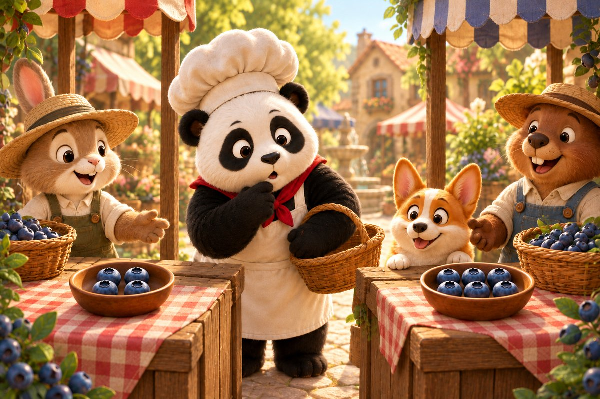
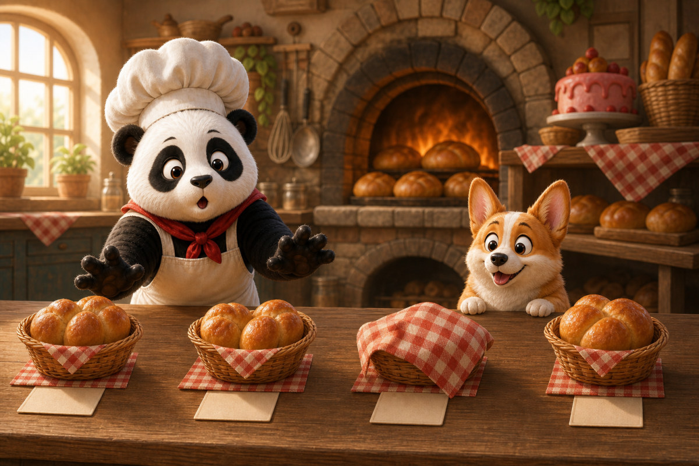
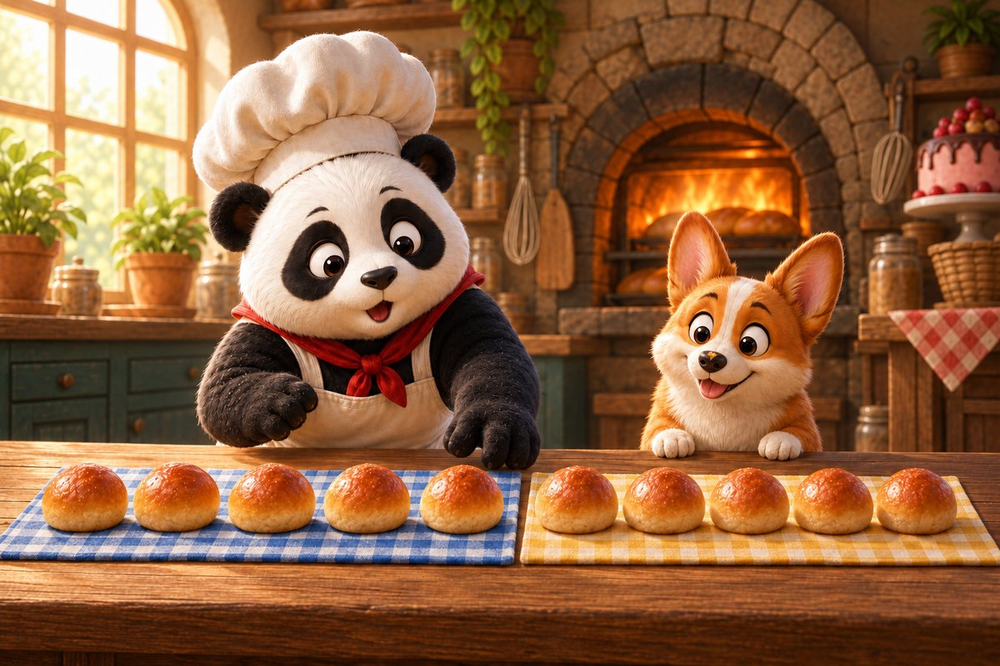
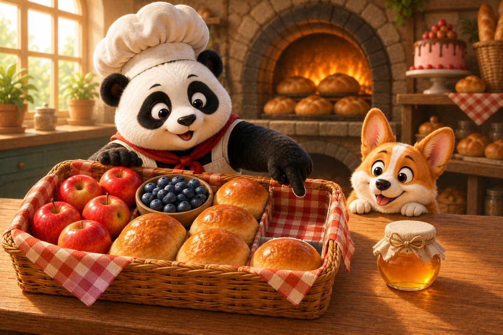
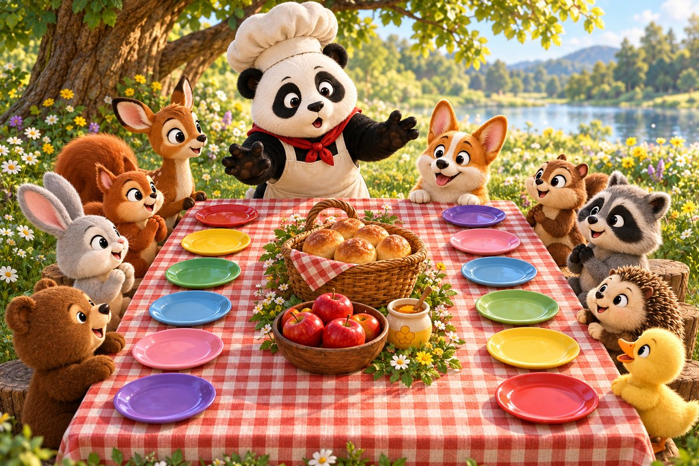

7 printed pages · 1.4 MB · A4 or US Letter. Download PDF · Open PDF to printOpens in a new tab. Use the PDF viewer's Print control. To use less ink, read online and choose only the questions on page 7 in Print.
Page 1 of 6 · Three Shiny Apples
Panda-Cake opens the bakery pantry and finds the picnic list tucked inside an empty basket. The first picture shows apples. Corgi-on-the-Cob rolls them gently across the counter while Panda-Cake catches each one before it reaches the flour bin.
Try it: How many apples belong in the basket?
2
3
4
Show the answer
3. Three shiny apples settle at the bottom of the basket.

Page 2 of 6 · The Berry Tables
At the market, two berry tables stand side by side. One farmer has a small bowl left; the other has a fuller bowl. Panda-Cake needs the bowl with more berries, but only if there will still be enough for the farmer’s family.
Try it: Which group has more?
4 berries
6 berries
They match
Show the answer
6 berries. Six berries are more than four, and the farmer has another basket to share.

Page 3 of 6 · Numbered Bread Baskets
Four bread baskets wait beside the oven, but one number card has slipped beneath a tea towel. Corgi lifts the corner while Panda-Cake reads the basket numbers in order.
Try it: Which number belongs in the gap?
2
4
6
Show the answer
4. Four completes the row, and the warm rolls are ready to pack.

Page 4 of 6 · Two Neat Rows
Panda-Cake arranges picnic buns in two neat rows. Five sit on the blue cloth and five sit on the yellow cloth. Corgi guards both rows very seriously, although one crumb lands on his nose.
Try it: Five buns and five more make how many?
8
10
12
Show the answer
10. Two groups of five make ten picnic buns.

Page 5 of 6 · Room in the Basket
The list is complete, but a tiny jar of honey still waits on the counter. Panda-Cake looks at the packed basket and notices one open corner. Careful arranging can make space without squashing a single bun.
Try it: How many open spaces are left for the honey?
0
1
2
Show the answer
1. One open space is exactly enough for the honey jar.

Page 6 of 6 · A Picnic to Share
At the meadow, Panda-Cake places every treat on the long cloth. Friends arrive in twos and threes until twelve happy picnic places are filled. Panda-Cake checks the basket one last time. There is enough because everyone planned and counted together.
Try it: Which number is two more than 10?
11
12
13
Show the answer
12. Twelve places are ready for twelve hungry friends.
The end · Great counting
How did Panda-Cake fit the honey jar into a full basket?
Talk about the answer
By looking carefully, Panda-Cake found the one open corner and arranged everything so the jar fitted without squashing a single bun.
A full basket is lovely, but a shared basket is even better. You counted every ingredient and helped the picnic begin! SnackPack 123 Counting has more number stories, counting games and ten-frames.